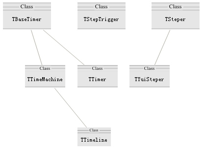
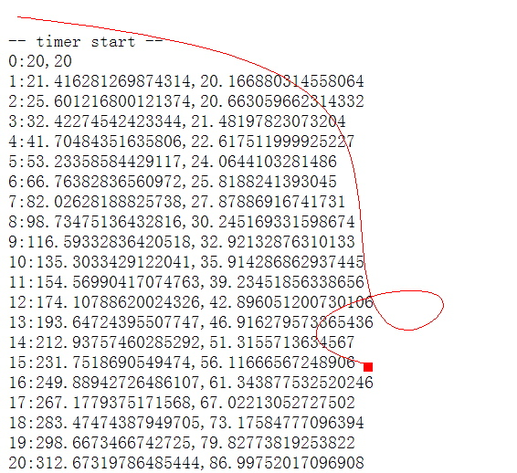
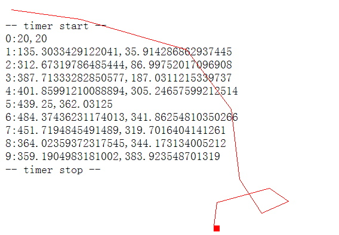

Qomolangma OpenProject v1.0
类别 ：Rich Web Client
关键词 ：JS OOP，JS Framwork, Rich Web Client，RIA，Web Component，
DOM，DTHML，CSS，JavaScript，JScript
项目发起：aimingoo (aim@263.net)
项目团队：../../Qomo_team.txt
有贡献者：JingYu(zjy@cnpack.org)
一、框架库：时间线与时间处理器
~~~~~~~~~~~~~~~~
几乎所有的动画特效都与时间线有关系。在一般的应用软件里，会提供一个固定间隔的时间
线，设计人员则在时间线上描述指定的时间里会发生的事件。这些事件被连续起来，就成为
了动画；而一组时间线合并起来，就成了动画场景。
Qomo里实现时间线的初衷，只是为了在绘制界面组件的效果时，提供一些用时间控制的效果。
例如窗体关闭/隐藏时的卷入效果(以及在打开时的展开)；又例如一个Outlook风格的纵向Bar
在点击一个按钮时的展开。
在Windows32和vista风格的界面设计中，这些组件都具有一些特殊的动画效果。例如窗体弹
出或控件的淡入淡出。这些动态效果其实都是在时间线的基础上来实现的。
但这些仍然只是单一组件，或一类组件的单一特效。这种情况下，只能算是“动态效果”。
复杂的设计是“一组时间线+一组元素”，这种情况通常表现为动画场景。
动画场景有些时候并不用“时间线”来控制，而是有“帧”来控制。多画面的帧切换也就构
成了动画。所以，在每一个帧事件中的处理，通常就是“效果渲染”。当然，实际来做的时
候会更加复杂，涉及到非常多的演染技术。但如今动画制作领域的关键技术，就是这里提到
的时间线与帧。
Qomo框架库同时实现时间线与帧，但对二者不提供有偏好的推荐。Qomo中，二者的区别表现
在：时间线并不精确，而且并不按标准时间间隔提供；帧是纯序列化的演染空间和数据供应，
但与时间并不精确的重叠。
这一切根源在于IE等浏览器中并没有足够精度的时钟或日期对象。所以如果你真的打算用JS
或Qomo来做过于复杂的、涉及时间线或帧序列的动画场景，那可能效果并不会如你想象的平
滑。
随本次文档发布的是Qomo Beta 2 update 2, 文档下载在：
http://www.01cn.net/users/aimingoo/files/Qomo.V1(b2.upd2).zip
将文档解压后，覆盖到Qomo Beta 2的目录中即可。Qomo Beta 2下载：
http://www.01cn.net/users/aimingoo/files/Qomo.V1(b2).zip
二、时间处理体系的设计
~~~~~~~~~~~~~~
Qomo把一个动画效果理解为“时间变化”和“数据变化”两个部分。Qomo认为，无论时间变
化还是数据变化，都可以导致动画效果的产生。
例如在窗口弹出效果中，一方面可以是“每单位时间窗口变大的比例(data)成曲线”，另一
方面也可以是“窗口每变大单位比例所用的时间(time)成曲线”，两者之任一，都可以产生
动态效果，但代码却不一样：
function resize_win(v) {
win.width = win.width * v;
win.height = win.height * v;
}
// 第一种
var data = 1;
setInterval("resize_win(data=data*1.2))", 10);
// 第二种
var time = 1000;
setTimeout(function() {
resize_win(1.2);
setTimeout(arguments.callee, time=time0.8);
}, time=time0.8);
------------------
Qomo也认可时间与数据同时发生的变化，也就是“非固定间隔的时间线”下的数据变化。尽
管在实用中这种变化很难处理，但可以产生独特的效果。
Qomo把具备理解这种逻辑的能力对象称为“时间处理器(TimeMachine)”。这个类接口描述为：
ITimeMachine = function() {
this.start = Abstract; // function(time, data) {}
this.OnTimer = Abstract; // function(step, data) {}
this.stop = Abstract;
}
------------------
其中，ITimeMachine.start()方法的入口有time与data。它们不是单纯的值，而一个TSteper
类型的对象。这种对象用于产生每个单位间隔可释出的值(新的数据，或者新的时间间隔)。
三者的关系主要建立在OnTimer事件的step参数上。因为TSteper类的事件OnStep的类型声明为
TOnStep = function(nStep, nLast) {}
------------------
其中nStep表明第几步，nLast表明上一步产生的数据，作为此次产生数据使用的参考。
因此，整个Qomo的时间处理体系表达的逻辑就是：
- TimeMachine.OnTime，time.OnStep和data.OnStep在相同的step值时产生一组数据;
- 在相同的step下，OnTime针对于data.OnStep产生的数据data所进行的处理；
- TimeMachine通过time.OnStep来得到下一次发生处理的延时。
所以，Qomo在时间处理体系上的类继承图设计如下：

(images/timer_architectur.jpg)
其中TTimer是对window.setInterval和window.setTimeout的一个封装；TTimeline派生自
TTimeMachine，用于简化“固定间隔的时间线”的处理。TYuiSteper继承自TSteper，它的
部分代码来自于Yahoo UI开源项目。其中有一个名为TStepTrigger类，它的作用是在每次
step时计算数据/时间值的增量，是一个工具类，也来自于对Yahoo UI中相同功能的封装。
三、测试代码及分析(1)
~~~~~~~~~~~~~~~~
Qomo最初打算按Yahoo UI中的动画效果演示来做一个DEMO，因此这个DEMO最初的效果，只
是在屏幕上的一个点，从位置A飞行到位置B。
飞行过程有一点要求：
- 飞行中速度是可控的，便如渐快/渐慢，或快-慢-快这样的变化；
我们说过，速度可以表现为单位时间内的数据(飞行长度)变化，也可以表现为单位数据所
耗的时间不同。在示例中，我们使用前者，也就是“单位时间”。那么显然，我们可以使
用一个TTimeline组件来控制整个过程。
所以基本的代码框架就是：
<body>
<div id=dot style="font-size:0; width:10px; height:10px; background:red; position:absolute"></div>
</body>
<script>
// 0. 初始数据
var el = document.getElementById('dot');
var x0 = el.offsetLeft, x1 = 400;
// 1. 构造一个时钟及其处理程序
var doFly = function(step, data) {
var sty = this.get('TimerData').style;
sty.left = data;
}
var T2 = TTimeline.Create(doFly);
T2.set('TimerData', el);
// 2. 构建一个数据发生器, 用于向时钟提供数据
provide = TYuiSteper.Create();
provide.set('From', x0);
provide.set('To', x1);
// 缺省值
// provide.set('Frames', 100);
// provide.set('Easing', 'easeOut');
// 4. 启动时钟
T2.start(provide, 1);
</script>
这个示例的完整代码参见(DOCUMENTs/TestCase/T_TimeLine2.html)。

运行效果参见(DOCUMENTs/TestCase/images/T_TimeLine2.jpg)。
我们看到，数据发生器提供的一组参数的含义，就是“用100次的周期，产生x0~x1之间的平
滑变化的数据，采用的数据变化的算法为easeOut”。
这个数据发生器被作为Timeline的参数传入：
T2.start(provide, 1);
------------------
表明数据使用provide提供的值，而时间采用1ms为间隔的时间线。
那么，在“100次的周期”中，时间处理器(T2)的变化是什么呢？这在T2被创建的时候就声明
过了：
var T2 = TTimeline.Create(doFly);
T2.set('TimerData', el);
------------------
创建时的这行代码与下面的代码是相同的：
var T2 = new Timeline(doFly);
或
var T2 = TTimeline.Create();
T2.OnTimer.add(doFly);
而后我们初始化了TimerData属性的值，它表明这个时间关注的数据对象是el。
在每次时间处理器被激活时，我们看到的doFly操作是这样：
var doFly = function(step, data) {
var sty = this.get('TimerData').style;
sty.left = data;
}
------------------
我们从TimerData属性中取出el元素，并修改el.style.left，就完成了飞行动画。
我们在T2.start()之前，可以调整一些数据发生器的参数，就可以改变这个飞行动画的效果。
这些参数包括：
this.set('Easing', 'easeOut'); // 数据产生的方法
this.set('Frames', 100); // 帧数，控制step的总数
this.set('Fps', 200); // 帧速率, qomo beta2中未实现.
其中Easing的取值参考StepTrigger.js中TStepTrigger类的方法，目前包括：
easeNone
easeIn
easeOut
easeBoth
backIn
backOut
backBoth
------------------
四、测试代码及分析(2)
~~~~~~~~~~~~~~~~
接下来，对飞行过程又增加了一点要求：
- 飞行的路线是可控的，而不是单纯的A-B的直线。
路线可控是通过“控制点”来实现的。贝赛尔曲线的特点是“在两点之间增加一个控制点，
即可以形成贝赛尔曲线”。用来做“飞行路线”，那么即是：无论在两点之间增加多少个
控制点，则通过贝赛尔曲线的连结，最终可以从A点飞行到B点。
这与上面的示例还有一点明显不一致的地方：飞行的坐标是x,y同时发生变化，而非单一
地在x方向上平移。所以这个需求其实包含了两个技术要点：
- 处理器(TTimeline)与提供者(TYuiSteper)都需要能处理两个以上的数据
- 提供者能够有更复杂的运算能力
但是，需要留意的是，这个需求的基本逻辑并没有变化：要求一个文档对象(element)能
做飞行的动态效果。因此我们在上面的代码框架上做一些修改：
// 0. 初始数据
var el = document.getElementById('dot');
var fromPoint = [el.offsetLeft, el.offsetTop];
// 1. 构造一个时钟及其处理程序
var doFly = function(step, data) {
var sty = this.get('TimerData').style;
sty.left = data[0];
sty.right = data[1];
}
var T2 = TTimeline.Create(doFly);
T2.set('TimerData', el);
// 2. 构建一个数据发生器, 用于向时钟提供数据
provide = TYuiSteper.Create();
provide.set('Points', [
fromPoint, // from: x0, y0
[400, 400] // to: x1, y1
]);
// 5. 启动时钟
T2.start(provide, 1);
这个示例的完整代码参见(DOCUMENTs/TestCase/T_TimeLine3.html)。
我们看到，基本上我们只重新约定了doFly与provide交互的数据格式(从原来的单一值，
变成数组表示的坐标点)，然后我们就完成了主要代码。
但是我们前面说过，路线可控是通过贝赛尔曲线来实现的。当贝赛尔曲线只有起始点与
结束点，而没有中间控制点时，其实将绘制为一条直线。也就是说，上例的实飞行路线
的效果是从fromPoint到[400, 400]的一条直线。
但我们只需要调整控制点，即可以完成“可控的飞行路线”。例如：
provide.set('Points', [
fromPoint, // from: x0, y0
[200, 180],
[500, 600],
[200, 400],
[1024, 200],
[100,320],
[400, 400] // to: x1, y1
]);
------------------
我们注意到一点事实：我们并没有修改任何屏幕表现的算法，也没有修改代码框架，就
实现了UI上的表达效果的可控。这其实是“数据提供”与“数据表现”分离所带来的效
果。在现代的UI设计上，数据表现与数据提供，以及业务逻辑三者的分离，是一个非常
关键的话题。
五、测试代码及分析(3)
~~~~~~~~~~~~~~~~
在阅读代码的朋友可能已经发现，真实代码中的示例与这里讲述的稍有差异。但更仔细
地看代码，你会发现更有价值的东西：我们在界面上绘制了一条曲线，但没有修改原来
框架中的任何代码！
我们前面提到的例子，都只是要求“一个点在界面上从A飞行到B”。但是，这个飞行的
效果却难以被观察。——大家知道，点的轨迹是线。因此如果我们将这个飞行过程中的
点连接起来，就应该是一条直线/曲线表达的飞行轨迹。
但从业务需求上来说，这条“飞行轨迹”并不是原始需求中的部分。——它只是我们在
开发过程中，需要进行的观察。简而言之，要么我们写一些代码嵌在原来的业务逻辑中，
要么我们做一个新系统在原来的业务之外观察它。
这个“在原来的业务之外”观察的系统，其实就可以用AOP来实现。因为AOP本来就是用
来观察一批对象的行为的。所以我们在TTimeLine2.html和TTimeLine3.html这两个示
例中都用了AOP。
两个代码中只有极少的不同，主要差异还是在于data提供的格式不一致。我们以T_Time-
Line3.html为例：
// 3. 使用切面来观察绘制过程
var aspOnTimer = new ObjectAspect(T2, 'OnTimer', 'Event', fromPoint); //push a metadata
asp_OnTimer.OnAfter.add(function(o, n, p, a, v) {
var data = a[1], pt = this.get('MetaData')[0];
drawLine(pt[0], pt[1], data[0], data[1], 'red', 1, 0);
this.set('MetaData', [data]);
$debug(a[0], ':', data);
});
运行效果参见(DOCUMENTs/TestCase/images/TTimeLine31.jpg)。

这里用到了一个以前在讲AOP时未详述的metadata。所谓metadata，是与一个切面相关
的数据，它应当在切面进入时通过aspect自身可访问到。它是切面方法执行过程中的参
考数据。
这个aspect需要一个起点，来做轨迹绘制的第一个坐标。这个起点就是fromPoint。它在切
面创建时被传入。所以"MetaData"属性的值。——MetaData是一个数组，所以fromPoint实
际上是该属性值的第一个元素。
所以我们看到了切面的OnAfter中添加了一个事件处理函数。其中：
var data = a[1], pt = this.get('MetaData')[0];
// ...
this.set('MetaData', [data]);
------------------
data是当前的“被观察系统”正在处理的数据，而pt则是上一次的数据，它被不断更新着。
该事件的入口参数a，是被观察者T2.OnTimer调用时的参数。我们知道这个事件的声明是：
T2.OnTimer = function(step, data) { }
------------------
所以第一个参数就是data，这就是data=a[1]的由来。
最后，由于我们知道data与切面的元数据(MetaData[0])都是表示点的数据。所以下面这
行代码就是画线了：
drawLine(pt[0], pt[1], data[0], data[1], ...);
------------------
我们回顾一下前面的内容，由于OnTimer的调用与数据提供者有关。也就是说，provide提
供多少数据，则界面上显示多少数据。——而这个“多少数据”是由TSteper中的step值来
控制的。也就是OnTimer中的第一个参数，或说是OnStep中的第一个参数。因此，在切面中，
我们可以通过下面的代码显示出数据的变化：
$debug(a[0], ':', data);
------------------
在这个示例中，如果我们可以改变provide的一些属性，那么就可以在界面上看到这些变化
了。例如缺省情况下，Frames值为100帧，所以界面上显示了100条数据。但如果改成10帧，
那么显示数据也减少了，而曲线也就不足够平滑了：
// 2. 构建一个数据发生器, 用于向时钟提供数据
provide = TYuiSteper.Create();
provide.set('Frames', 10);
------------------
运行效果参见(DOCUMENTs/TestCase/images/TTimeLine32.jpg)。

而如果你修改时间线的间隔，也会发现显示效果不够平滑了。例如：
// 5. 启动时钟
T2.start(provide, 200);
六、测试代码及分析(4)
~~~~~~~~~~~~~~~~~~
这一小节的分析，我们只是简单地说一下这个测试代码的界面控制。
如果一个时间线被设计得过长，例如1000 * 1ms，那么我们就可能需要一个随时可以中断
的时间线。也就是说，时间不但能被start，也能被stop。因此，TTimer这个基类就设计了
一些基本的控制逻辑。包括：
TTimer.start()
TTimer.OnStart
TTimer.OnTimer
TTimer.stop()
TTimer.OnStop
------------------
因此，为了测试这些逻辑，示例中也包括下面的一些代码：
// 4. 测试基类中的控制方法
T2.OnStart.add(function() {
$debug(' -- timer start --');
});
T2.OnStop.add(function() {
$debug(' -- timer stop --');
});
document.onclick = function() {
T2.stop();
}
------------------
七、其它
~~~~~~~~~~~~~~~~~~
本文档中，我们讲述了Qomo的时间框架，也结合实例讲述了AOP的用法。
1. 关于在界面上的图形绘制
大家在本文档中看到的图形都比较精细，但运行代码包中示例时看到的线条却比较粗糙。这是
因为文档中使用的drawLine()来自于一个更精细的图形代码包。我将在后续的版本发布中，公开
这个图形库。——目前在Qomo中有一个VML的图形库，还有在TestCase中用的drawLine.js。但这
些都不是Qomo最终的图形框架。
更新的图形框架在设计和实现中，并没有完成，故暂不公开。
2. 关于兼容性问题
目前大家看到的示例代码在FireFox上不能运行。其实只有一个原因，就是FF里没有insertAdj-
acentHTML方法，因此也就不能用drawLine.js中的代码在界面上画图，以及用$debug来输出文字。
因此去掉相关的代码后，就可以运行示例了。
在开发中的版本，已经解决过insertAdjacentHTML等问题，因此是可以run在firefox上的。但
这些代码放在一个还没有被pub出来的DOM兼容层上，因此也暂时不公开。
Qomo试图在DOM上很好的兼容Firefox等浏览器，但目前看起仍有较大的困难。:(
3. 关于TTimer类
TTimer类是对window.setTimeout和window.setInterval的封装。它明显的特点是规范了这两个
方法的使用流程。——在Qomo中，二者的使用将没有明显的差异。
由于TTimer.OnTimer事实上已经支持使用TSteper，因此TTimer能使用Steper.js中的各种类。这
个示例在T_Timeline.html中。
TTimer类另一个最大的特点，是便得OnTimer中能够使用类方法，并正确地传入对象的this引用。
——而setTimeout与setInterval只能传入函数引用，不能传入方法。因此this引用总是指向window。
setTimeout(function() {
alert(this === window);
}, 1000);
-----------
4. Qomo时间框架上的一些TODO
事实上目前的Qomo时间框架并不完整。例如还没有处理Fps(帧速率)，以及修正由IE的setTimeout()
精度带来的时间线不规则。——这其实需要在运算中做时间补偿。
Qomo应该还有一个能表现“时间与数据同时变化”的效果的示例。
这些代码将在beta 3发布时统一提供。